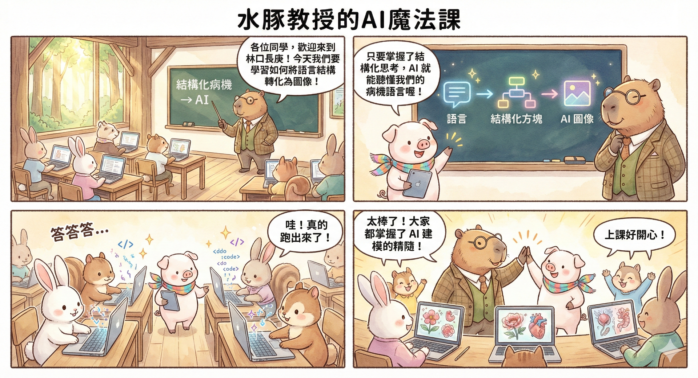
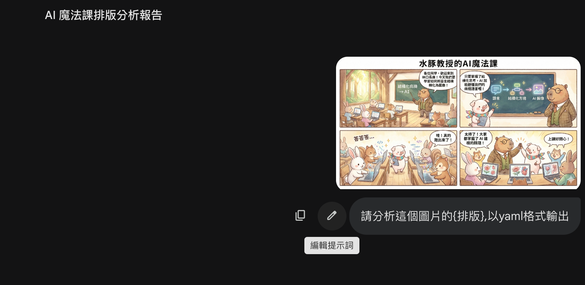

3 Module 3 — 多重文字精準控制的技巧

3.1 學習重點
- 抽取要素之後，存成 YAML 格式調整庫
3.2 學習觀察圖片的要素（意向性）
- 排版（四格）
- 色彩風格
- 形式（漫畫、雜誌、圖解…）
3.3 Prompt 練習 1 — 排版分析
將圖片貼入對話框，開啟「Pro」模式：
請分析這個圖片的{排版}，以 yaml 格式輸出3.3.1 結果示範
Image_Layout_Analysis:
Overall_Structure:
Format: "四格漫畫 (4-Panel Comic Strip)"
Grid_System: "2x2 網格 (兩列兩行，各窗格等比例對稱)"
Reading_Direction: "由左至右，由上至下 (Left to Right, Top to Bottom)"
Gutter: "白色邊框分隔各個面板"
Header:
Position: "頂部置中，獨立於四格漫畫之外"
Text_Content: "水豚教授的AI魔法課"
Typography: "粗體黑色大字，作為全圖主視覺標題"
Panels:
Panel_1:
Grid_Position: "左上角 (Row 1, Column 1)"
Composition: "全景/遠景 (Wide Shot)，建立場景與人物關係"
Main_Subjects:
Right: "水豚教授 (面向左側，手持教鞭指向黑板)"
Left_to_Center: "多名動物學生 (背對/側面對鏡頭，坐在木桌前使用筆電)"
Visual_Elements: "木造教室、窗外森林風景、黑板"
Text_Distribution:
- Type: "黑板文字"
Position: "畫面左上角"
Content: "結構化病機 -> AI"
- Type: "對話框 (教授)"
Position: "畫面中上方"
Content: "各位同學，歡迎來到林口長庚！今天我們要學習如何將語言結構轉化為圖像！"
Panel_2:
Grid_Position: "右上角 (Row 1, Column 2)"
Composition: "中景/特寫 (Medium Shot)"
Main_Subjects:
Right: "水豚教授 (側面特寫，推眼鏡)"
Left: "小豬學生 (正面站立，手持平板)"
Text_Distribution:
- Type: "對話框 (小豬)"
Content: "只要掌握了結構化思考，AI就能聽懂我們的病機語言喔！"
Panel_3:
Grid_Position: "左下角 (Row 2, Column 1)"
Composition: "平視角群像 (Group Shot)"
Text_Distribution:
- Type: "音效文字"
Content: "答答答..."
- Type: "對話框 (兔子)"
Content: "哇！真的跑出來了！"
Panel_4:
Grid_Position: "右下角 (Row 2, Column 2)"
Text_Distribution:
- Type: "對話框 (教授)"
Content: "太棒了！大家都掌握了AI建模的精隨！"
- Type: "對話框 (兔子)"
Content: "上課好開心！"3.4 Prompt 練習 2 — 色彩分析

將圖片貼入對話框，開啟「Pro」模式：
請分析這個圖片的{色彩}，以 yaml 格式輸出3.4.1 結果示範
image_color_profile:
overall_vibe:
tone: "溫暖柔和 (Warm and Soft)"
temperature: "暖色調為主，冷色調為輔"
style: "水彩童話繪本風 (Watercolor Storybook Style)"
color_palette:
primary_colors:
- name: "大地棕 / 原木色 (Earthy Brown / Wood)"
usage:
- "教室內的課桌椅"
- "樑柱等木製建材"
- "水豚與松鼠的毛色"
- name: "奶油白 / 米色 (Cream White / Beige)"
usage:
- "畫面基底色"
- "對話框與文字背景"
- "白兔的毛色"
secondary_colors:
- name: "復古黑板綠 (Vintage Blackboard Green)"
usage:
- "黑板背景"
- "水豚教授的西裝背心"
- "窗外森林風景"
- name: "柔和粉彩 (Pastel Pink & Blue)"
usage:
- "小豬的膚色與角色的腮紅"
- "學生的服裝配件"
accent_colors:
- name: "魔法科技螢光 (Magical Tech Neon)"
specific_colors: ["青藍色 (Cyan)", "粉紫色 (Magenta/Pink)", "亮黃色 (Bright Yellow)"]
effect: "在溫馨復古的木質環境中，利用高明度的發光色對比出「AI 科技」與「魔法」的視覺焦點。"3.5 什麼是 YAML 格式？
YAML（YAML Ain’t Markup Language）是一種指令碼語言，被設計為極度人性化且易於機器解析的資料序列化格式。
3.5.1 格式設計的原因
- 人與機器都易讀：使用縮排來表示資料的結構與層級關係，取代了括號或標籤。
- 清晰的結構化：YAML 的格式是一組鍵/值組合（
Key: Value），透過縮排建立巢狀結構。 - 數據交換的靈活性：支援純量（單一值）、列表（序列）和映射（字典/物件）。
3.5.2 在結構化病機思考中的應用
在課程中，YAML 格式完美服務於 Module 3 的目的：
- 作為提示詞調整庫：將圖片的排版、顏色、角色位置等元素透過 YAML 格式清晰地拆解出來
- 精準控制 AI 圖像：能夠精確地引用結構化的控制參數，穩定地生成符合預期風格和佈局的圖像，實現「多重文字的精準控制」